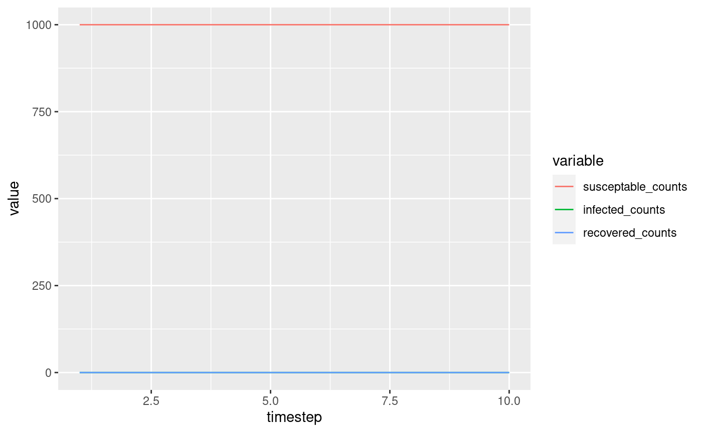
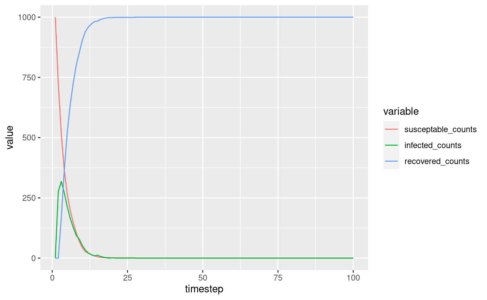
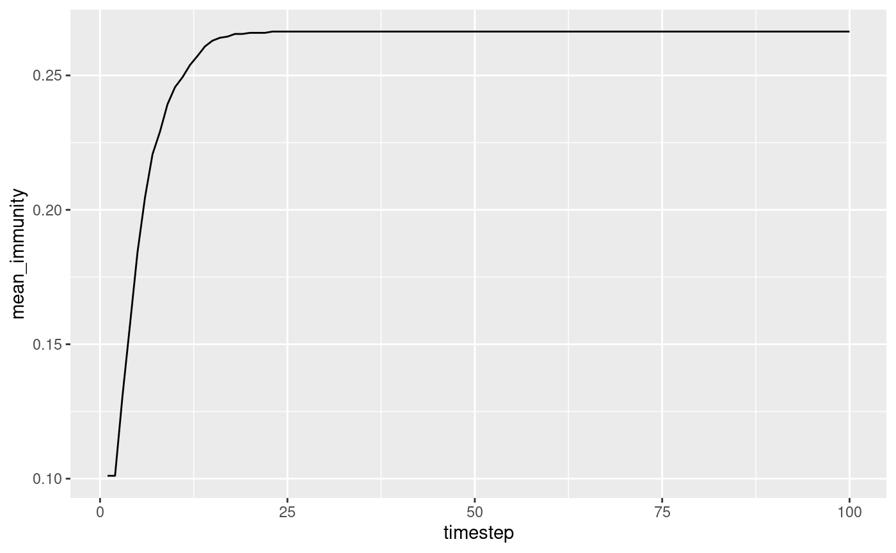

Modelling.RmdThis article will walk you through the steps to create a basic SIR model, the hello world of epidemiology.
This tutorial assumes that you’ve read the “Basics” section on the homepage.
###1. Defining the model structure
This part allows others to get a basic idea of what you are modelling. You clearly define the types of individual you are interested in, their possible states, and the initial population size.
Specifying your model also allows the package to build efficient data structures to handle your simulation.
population <- 1000 S <- State$new('S', population) I <- State$new('I', 0) R <- State$new('R', 0) human <- Individual$new('human', list(S, I, R))
###2. Printing model outputs
Let’s run the simulation for 10 timesteps:
simulate(human, list(), 10) #> timestep #> 1 1 #> 2 2 #> 3 3 #> 4 4 #> 5 5 #> 6 6 #> 7 7 #> 8 8 #> 9 9 #> 10 10
Great!
But an empty output is not very useful. Let’s add a process to store the size of each state.
render_state_sizes <- function(api) { api$render('susceptable_counts', length(api$get_state(human, S))) api$render('infected_counts', length(api$get_state(human, I))) api$render('recovered_counts', length(api$get_state(human, R))) } output <- simulate(human, list(render_state_sizes), 10) output #> timestep susceptable_counts infected_counts recovered_counts #> 1 1 1000 0 0 #> 2 2 1000 0 0 #> 3 3 1000 0 0 #> 4 4 1000 0 0 #> 5 5 1000 0 0 #> 6 6 1000 0 0 #> 7 7 1000 0 0 #> 8 8 1000 0 0 #> 9 9 1000 0 0 #> 10 10 1000 0 0
That’s better.
For the rest of this tutorial, we’ll plot these outputs as graphs because they’re easier to interpret.
plot_states <- function(output) { ggplot( melt(output, 'timestep'), aes(x = timestep, y = value, group = variable) ) + geom_line(aes(color = variable)) } plot_states(output)

###3. Changing states
Now let’s model a disease and move these individuals between states!
We could model these state transitions simply by randomly chosing individuals from the S state and moving them to the I state with rate rate. And the same for I to R and R to S
These processes can be repetitive to write by hand, so it is often a good idea to generate these functions, as below:
random_transition_generator <- function(from, to, rate) { function(api) { from_state <- api$get_state(human, from) api$queue_state_update( human, to, from_state[runif(length(from_state)) < rate] ) } } processes <- list( random_transition_generator(S, I, .3), random_transition_generator(I, R, .5), random_transition_generator(R, S, .1), render_state_sizes ) output <- simulate(human, processes, 100) plot_states(output)
###4. Adding Variables
Quite often you will want to include continuous variables in your model. What if you want to model Immunity? or Age? or Location?
Let’s take immunity for example. We could decide that it should be acquired when individuals individuals recover from infection and should reduce the chances of immune individuals from becoming re-infected.
We would first want to update our model structure…
# We can randomly assign immunity values between 0 and .2 immunity <- Variable$new('immunity', runif(population, 0, .2)) human <- Individual$new( 'human', list(S, I, R), variables = list(immunity) )
We can then define a more complicated infection and recovery process that takes into account immunity…
infection <- function(api) { from_state <- api$get_state(human, S) # Get the immunity for susceptable humans and use the complement to modify the # infection rate rate_modifier <- 1 - api$get_variable(human, immunity, from_state) rate <- .3 api$queue_state_update( human, I, from_state[runif(length(from_state)) < (rate * rate_modifier)] ) } recovered_to_susceptable <- function(api) { from_state <- api$get_state(human, I) rate <- .2 recovered <- from_state[runif(length(from_state)) < rate] api$queue_state_update( human, R, recovered ) api$queue_variable_update( human, immunity, api$get_parameters()$immunity_level, recovered ) } processes_with_immunity <- list( infection, random_transition_generator(I, R, .5), recovered_to_susceptable, render_state_sizes ) simulation <- simulate( human, processes_with_immunity, 100, parameters = list(immunity_level = .6) ) plot_states(simulation)

Let’s also have a look at the average immunity in our population:
render_immunity <- function(api) { api$render('mean_immunity', mean(api$get_variable(human, immunity))) } simulation <- simulate( human, c(processes_with_immunity, render_immunity), 100, parameters = list(immunity_level = .6) ) ggplot( simulation, aes(x = timestep, y = mean_immunity) ) + geom_line()

And there you have it! We have created a simple SIR model with immunity and experimented with some outputs.